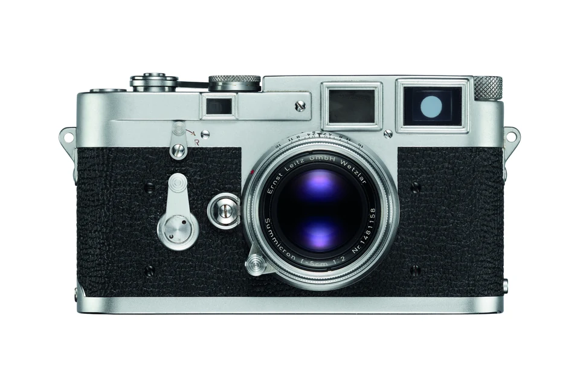
152ボディの独立機種
1923—2015シリアル番号データの収録年代
Camera & Lens番号の種類を選んで検索
EXPLORE THE CAMERA ARCHIVE
写真から、ボディ図鑑へ。
気になる一台から、時代とシリーズをたどってみてください。
CAMERA BODIES ／ 152 MODELS
ボディ図鑑を開く →ライカのかたちを、見比べる。
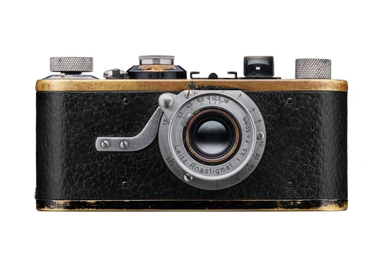
I (A)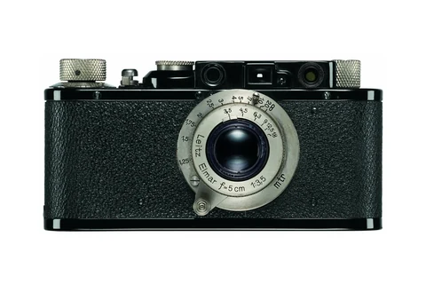
II (D)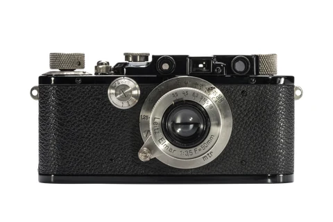
III (F)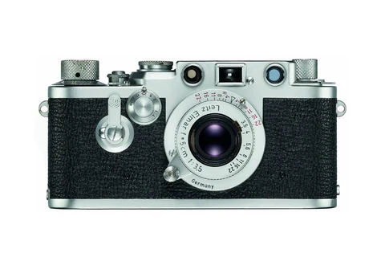
IIIf M3
M3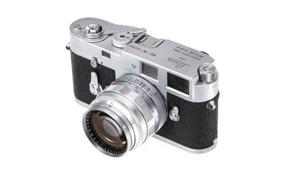
M2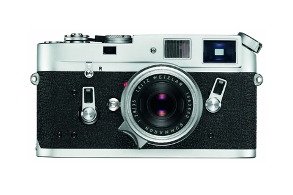
M4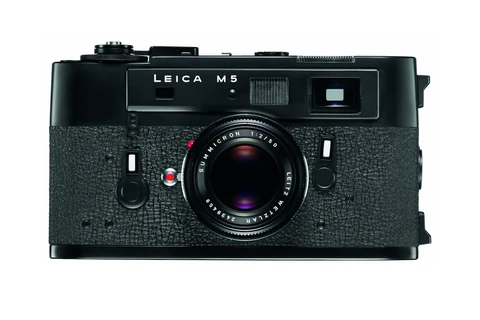
M5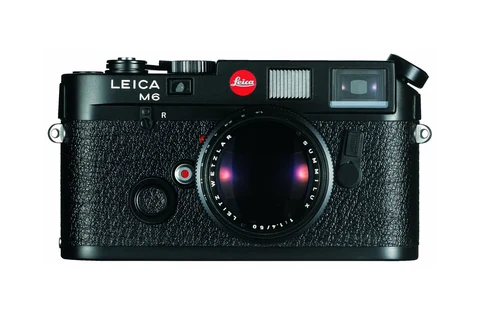
M6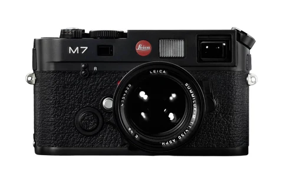
M7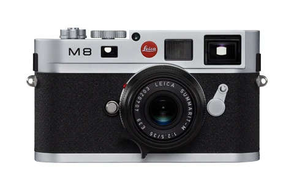
M8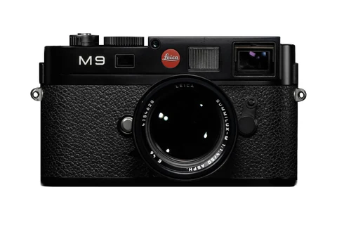
M9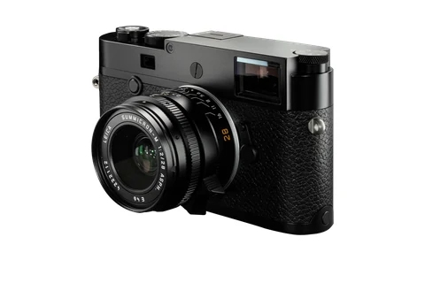
M10 M11
M11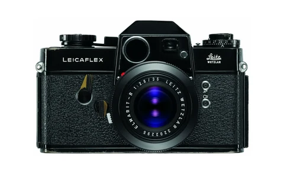
Leicaflex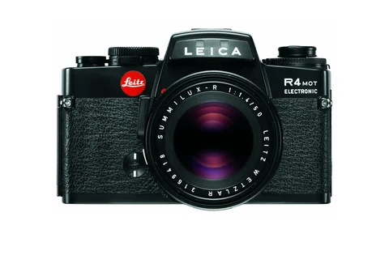
R4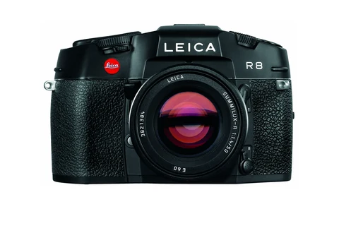
R8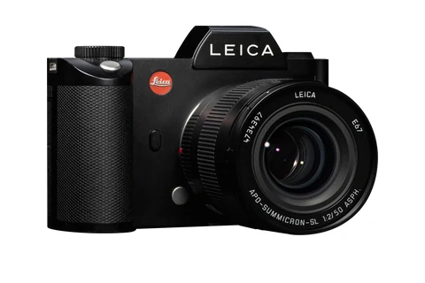
SL (Typ 601)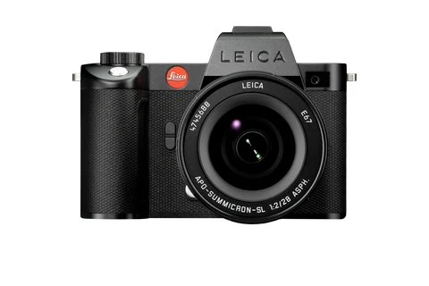
SL2-S SL3
SL3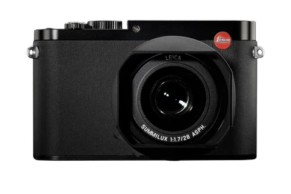
Q (Typ 116)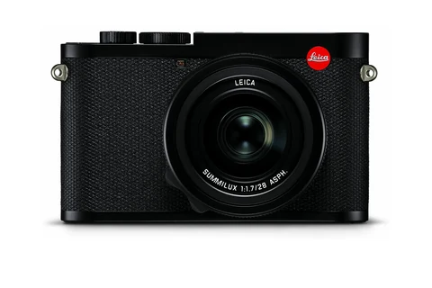
Q2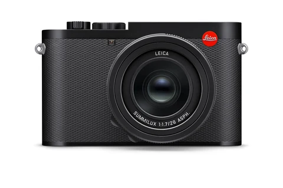
Q3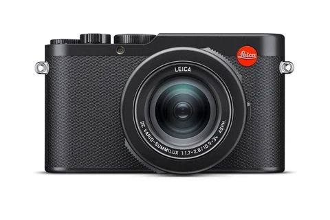
D-Lux 8収録機種の一部です。写真を選ぶと、その機種の解説・仕様が開きます。
SERIAL NUMBER DATABASE
シリアル番号から調べる。
カメラ・レンズの番号から、登録年代と番号範囲を調べます。
FROM CAMERAS TO PHOTOGRAPHS
調べたあとに、写真へ。
道具として使ってきたライカと、その先にある写真の記録。